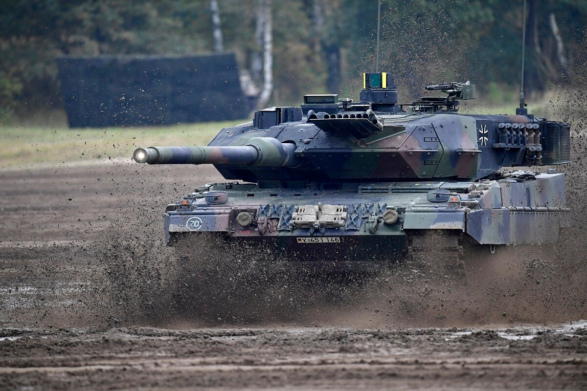

The Leopard 2A7 main battle tank was developed by German Krauss-Maffei Wegmann in cooperation with the German Army. It is a proposed upgrade package for existing MBTs. It was first revealed in 2010. It is a further development of the Leopard 2A6 MBT. It includes some subsystems of the Leopard 2 Peace Support Operation variant. The Leopard 2A7 is intended for urban warfare, low intensity conflicts, as well as conventional military operations. Currently it is one of the best main battle tanks in the world. German Army plans to upgrade about 50-150 Leopard 2 tanks to the 2A7 standard. German Army ordered a first batch of 20 MBTs upgraded from existing German Army Leopard 2A6 tanks. First Leopard 2A7 tanks were delivered to the German Army in 2014. This tank also received orders from export customers. In 2011 Germany agreed to sell more than 200 of these main battle tanks to Saudi Arabia. In 2013, Qatar ordered 62 of these MBTs. These are known as Leopard 2A7Q.
The Leopard 2A7 is a modular upgrade package, so other Leopard 2 tanks can be upgraded to this standard. Combat systems can be optimized depending on customer requirements. Protection of this main battle tank was further improved. The Leopard 2A7 is fitted with additional composite armor kit. It is the latest generation of passive armor, which provides higher level of protection against wide range of threats. It seems that the armor uses new nano-ceramics materials and modern titanium and steel alloys. The new armor offers 360° protection against RPG rounds. New side skirts were fitted. Protection of the hull floor was also increased to withstand blasts for landmines and improvised explosive devices. This MBT has a modular armor, so damaged modules can be easily replaced in field conditions.
This main battle tank is armed with a Rheinmetall 120 mm/L55 smoothbore gun. The same gun is used on the Leopard 2A6. It has better fire accuracy and longer range, comparing with the previous Leopard 2 tanks. The gun is loaded manually and is compatible with all standard NATO ammunition, as well as newly developed DM11 programmable HE rounds. These programmable multi-purpose munitions enable to engage targets behind cover and within buildings. These rounds can be also used against enemy troops, armored vehicles and low-flying helicopters. A total of 42 rounds are carried inside the tank. 15 rounds are stored in the turret bustle and are ready to use. Remaining rounds are stored inside the hull.
Secondary armament consists of a 12.7 mm machine gun. It is mounted in remotely controlled weapon station on top of the roof. There is also a coaxial 7.62 mm machine gun. This main battle tank has a front and rear thermal image system for the driver. Commander and gunner have additional cameras for long-range surveillance. Vehicle also carries advanced command and control equipment and is fitted with battlefield management system. The Leopard 2A7 is operated by a crew of four, including commander, gunner, loader and driver.
The Leopard 2A7 retains the engine of its predecessor. It is powered by an MTU MB-837 Ka501 turbocharged diesel, developing 1 500 hp. This dated engine proved to be reliable and fuel efficient, but is bulky by modern standards. This MBT is also fitted with Steyr auxiliary power unit, which powers all systems, when the main engine is turned off. Despite increase in weight vehicle has increased mobility due to improved suspension components. Cross-country performance is similar to that of the 2A5 and 2A6 tanks. This main battle tank can be fitted with a front-mounted dozer blade for self-entrenching and clearing obstacles. Mine ploughs or mine rollers can also be attached.